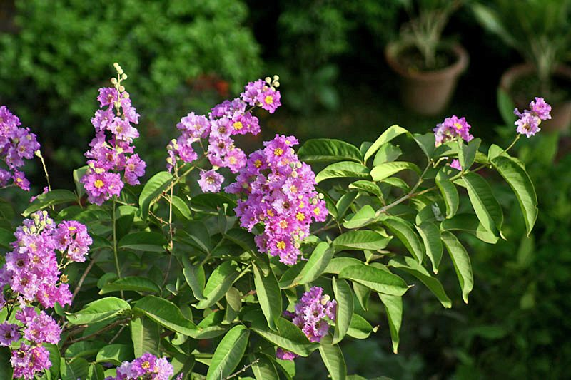

जारुलPride of India
Lagerstroemia speciosa · Lythraceae · FLR-0292

- Scientific name वैज्ञानिक नाम
- Lagerstroemia speciosa L.
- Family कुल
- Lythraceae
- Hindi हिंदी
- जारुल
- Local names स्थानीय नाम
- jarul, jaarul, pride of india, queen crape myrtle
- Status here यहाँ की स्थिति
- cultivated
- Movement आवागमन
- Resident, here all year
- Known from कहाँ दर्ज
- Others have published records from the Basti–Ayodhya districts बस्ती–अयोध्या के ज़िलों से दूसरों के प्रकाशित अभिलेख
- IUCN IUCN
- not evaluated
- Review समीक्षा
- audited and independently read
When to look कब देखें
Present all year. साल भर मौजूद।
Uses and possibilities उपयोग और संभावनाएँ
“Traditional medicine” means a documented traditional use, not a claim that it works. Nothing on this page is medical advice.
Drawn from the documented uses in the profile below, where each is labelled traditional, current or a research lead. All uses →
Tell it apart from इनसे अलग पहचानें
जारुल / Pride of India
Lagerstroemia speciosa L. — Lythraceae
जारुल — एक शानदार फूलों वाला पेड़ जिसके फूल बहुत बड़े, सुंदर, और रंगीन होते हैं। जुलाई-अगस्त में पेड़ खिल जाता है और पूरा बैंगनी, गुलाबी या सफेद दिखता है। पत्तियाँ लंबी, चमकदार होती हैं। यह पेड़ सर्दियों में अपनी सभी पत्तियाँ गिरा देता है। भारतीय महलों और मंदिरों में यह पेड़ सदियों से लगाया जाता है। लकड़ी मजबूत और टिकाऊ होती है।
Quick Identification त्वरित पहचान
| Feature | Description |
|---|---|
| Form | Deciduous tree, 8–15 m tall, erect trunk, spreading crown |
| Leaves | Simple, opposite, 15–25 cm, oblong-lanceolate, thick, glossy |
| Flowers | Large, showy, purple, pink, or white, crinkled petals, in terminal panicles |
| Pod | Woody, barrel-shaped, 2–3 cm, containing winged seeds |
| Bark | Smooth, thin, flaking to reveal pale yellow inner bark |
| Buds | Brown, conspicuous on bare branches in dry season |
Field tip: A deciduous tree bare in summer, then leafing out lushly before flowering heavily in May–July with large, showy, crinkled-petal flowers in purple, pink, or white. Flaking smooth bark exposes pale yellow wood underneath. Grows in temple gardens and old estates.
हिंदी — कैसे पहचानें: सर्दी में पत्तियाँ गिरीं। गर्मी में नई पत्तियाँ, फिर बहुत बड़े, सुंदर फूल। पत्तियाँ चमकदार, मोटी।
Morphology आकारिकी
Biometrics (measurements for Pride of India in Indian temple gardens and plantations):
| Measurement | Range |
|---|---|
| Tree height | 8–15 m |
| Trunk diameter | 30–90 cm |
| Leaf length | 15–25 cm |
| Leaf width | 5–8 cm |
| Flower cluster length | 20–30 cm |
| Individual flower diameter | 4–5 cm |
| Pod length | 2–3 cm |
Trunk and bark: Erect, moderately stout, with smooth, thin bark that flakes to reveal pale yellow wood underneath, creating a mottled appearance.
Leaves: Simple, opposite or whorled, oblong-lanceolate, thick, leathery, glossy green above, lighter beneath. Margins are entire. Venation is evident. The entire leaf is reticulate.
Flowers: Large, showy, with six crinkled petals, arranged in dense terminal panicles; color varies from deep purple to pink or white; the flower opens rapidly and is long-lasting (weeks on the panicle); highly fragrant; visited by bees.
Fruit: A woody capsule, barrel-shaped, 2–3 cm diameter, containing numerous winged seeds.
हिंदी: मोटी, चमकदार पत्तियाँ। बड़े, सुंदर फूल, झुर्रीदार पंखुड़ियाँ। गहरे रंग, सुगंधित। लकड़ी पीली।
Behaviour & Ecology व्यवहार और पारिस्थितिकी
A deciduous tree native to South and Southeast Asia, long cultivated in Indian gardens and temple grounds for its spectacular flowers. Lagerstroemia speciosa thrives in warm climates and tolerates a wide range of soils. It drops all its leaves in the dry season (December–April), then leafs out rapidly with the onset of warmth and moisture, and flowers heavily in May–July in a spectacular display. The large, crinkled flowers are visited by bees and butterflies. The tree is prized for its ornamental value and has been grown in royal gardens and temples for centuries. The wood is durable and valued for construction and fuel.
हिंदी: गर्मी में खूब फूल खिलते हैं, सर्दी में पत्तियाँ गिरती हैं। लकड़ी मजबूत। महलों में सदियों से लगाया जाता है।
Life Cycle / Phenology जीवन चक्र
| Month / Season | Event |
|---|---|
| December–March | Leaflessness; dormancy period; bare branches visible |
| March–April | New leaf emergence; leaf flush pale green |
| April–May | Leaf expansion and full development; tree in full leaf |
| May–July | Heavy flowering; panicles of showy flowers at branch tips |
| July–August | Pollination and fruit development; flower fall |
| August–September | Pod maturity and ripening; some leaf yellowing |
| September–December | Pod dehiscence and seed dispersal; progressive leaf fall |
A mature tree flowers reliably every year, creating a spectacular display in May–July.
हिंदी: दिसंबर में पत्तियाँ गिरीं, मई में फूल खिलें, सितंबर में फली पकें।
Associated Species / Interactions संबंधित प्रजातियाँ
- Pollinator visitors: Asian Honey Bee, Giant Honey Bee, and butterflies visit the large flowers.
- Garden companions: Often planted in traditional Indian gardens alongside Mango, Jamun, Neem, and chameli (jasmine).
- Ornamental use: Highly valued in formal gardens, temple compounds, and palace grounds.
- Shade provider: Dense canopy in leaf season provides moderate shade.
Pests and Diseases कीट और रोग
- Leaf-eating caterpillars: Occasionally, defoliating caterpillars feed on young leaves after the leaf flush; damage is light.
- Scale insects: Rarely, scale insects infest the trunk and branches; natural predators keep populations in check.
- Fungal leaf spots: Leaf spots are occasional in humid conditions; rarely cause significant damage.
- Generally healthy: Pride of India is hardy and relatively pest-resistant.
Agricultural / Human Relevance कृषि प्रासंगिकता
Ornamental value: The primary and historic value of Pride of India is its spectacular flowering. The large, showy, crinkled-petal flowers in May–July make it one of the most prized ornamental trees in Indian gardens, temples, and public spaces. It has been grown in royal gardens and temple compounds for centuries.
Timber: The wood is yellowish, hard, durable, and suitable for construction, furniture, and fuel. It is moderately valued for timber.
Shade: The dense, spreading crown provides good shade during the leafy season.
Traditional uses: The bark and leaves are used in traditional Ayurvedic medicine for their astringent and anti-inflammatory properties, though specific medicinal uses are not well-documented.
हिंदी: फूलों के लिए प्रसिद्ध। मंदिरों और महलों में सदियों से लगाया जाता है। लकड़ी अच्छी होती है। छाया देता है।
Expected Locally स्थानीय रूप से अपेक्षित
Not a field record. Written from published accounts for eastern Uttar Pradesh. No confirmed local sighting yet — if you have seen it, that is what the atlas needs.
अभी तक स्थानीय पुष्टि नहीं। यह विवरण प्रकाशित स्रोतों से है, किसी अवलोकन से नहीं।
Pride of India is to be expected as a cultivated ornamental tree in temple grounds, palace gardens, and homestead gardens throughout Basti district. GBIF holds published records from the core districts. The tree is grown for its spectacular flowers and may occasionally self-seed in disturbed areas near old gardens.
Distribution वितरण
Global range: Native to southern India, Myanmar, and other parts of Southeast Asia. Now cultivated in tropical and warm subtropical regions worldwide.
In India: Cultivated extensively in gardens, particularly in southern and central India; increasingly found in northern gardens.
In Uttar Pradesh: Cultivated in temple gardens and homestead gardens, particularly in eastern and central UP.
In Basti district / eastern UP: Present in temple grounds and old estates; records from core districts.
Research Questions शोध प्रश्न
Anyone can investigate these | कोई भी इन प्रश्नों की जाँच कर सकता है
- How many flowers does a mature Pride of India tree produce in one flowering season? / एक पेड़ कितने फूल देता है? — Mark a tree; count flowers weekly during flowering season.
- How long does a single flower remain open, and how many days does the entire panicle bloom? — Mark individual flowers; note opening and wilting times.
- Which bees and butterflies visit the flowers most frequently, and do they transfer pollen between flowers? — Observe with hand lens; identify visitors; check for pollen.
- What is the exact date of complete leaf fall and new leaf emergence for trees in your village? / साल में कब सब पत्तियाँ गिरती हैं? — Observe the same tree weekly.
- Can Pride of India seeds be germinated by simple soaking and planting without stratification? / क्या बीज से नए पेड़ लगाए जा सकते हैं? — Collect fresh pods; extract winged seeds; plant in soil.
Similar Species मिलती-जुलती प्रजातियाँ
| Species | How to tell apart | हिंदी | |
|---|---|---|---|
| Crepe Myrtle (Lagerstroemia indica) | Smaller tree (5–8 m); smaller flowers; different leaf shape; more varieties of color | छोटा जारुल — छोटे फूल, अलग पत्तियाँ | |
| [[jamun\ | Jamun]] (Syzygium cumini) | Evergreen; leaves smaller; white flowers in small clusters; dark purple fruit | जामुन — सदाबहार, छोटे फूल, फल |
| Gulmohar (Delonix regia) | Finely pinnate leaves; red-orange flowers; flat red pods | गुलमोहर — लाल फूल, पंखनुमा पत्तियाँ |
Field rule: A deciduous tree bare in dry season, with large glossy leaves, spectacular large crinkled-petal purple, pink, or white flowers in May–July, and flaking smooth bark with pale yellow inner wood.
Taxonomy & Classification वर्गीकरण
Original description. Described by Carl Linnaeus in 1753 in Species Plantarum. The genus name Lagerstroemia honors Magnus Lagerström, a Swedish merchant who collected plants in the East Indies. The specific epithet speciosa means "showy," referring to the spectacular flowers.
Subspecies. Monotypic — no subspecies are currently recognised.
Family and order placement. Lythraceae, order Myrtales. Related to other Lagerstroemia species and the pomegranate.
Phylogenetic notes. Lagerstroemia speciosa is the type species of the genus and has been extensively studied for ornamental breeding.
IUCN status rationale. Not evaluated. Widespread in cultivation; not assessed for conservation status.
Photo Gallery फोटो गैलरी
Photos needed आवश्यक फोटो
- [ ] Whole tree in full flower showing dense flowering crown (पूरा पेड़)
- [ ] Close-up of showy flowers showing crinkled petals (फूल)
- [ ] Bare tree in dry season showing flaking bark (सर्दी का पेड़)
No photos yet — add field photos to media/species/pride_of_india/ and run node scripts/sync_photos.js.
References संदर्भ
- Linnaeus, C. (1753). Species Plantarum. Laurentii Salvii, Stockholm.
- Hooker, J.D. (1875). Flora of British India, Vol. 2. L. Reeve & Co., London.
- Duthie, J.F. (1903). Flora of the Upper Gangetic Plain and of the Adjacent Siwalik and Sub-Himalayan Tracts, Vol. 1. Government Printing, Calcutta.
- Botanical Survey of India (2013). State Flora Series: Flora of Uttar Pradesh. BSI, Kolkata.
- Kirtikar, K.R. & Basu, B.D. (1935). Indian Medicinal Plants, 2nd ed., Vol. 1. Lalit Mohan Basu, Allahabad.
- GBIF Occurrence Data — Lagerstroemia speciosa, India (2020–2026).
Source file: species/flora/trees/pride_of_india.md